산업·경제
[부산형 햇빛소득②] 기업 PPA로는 수익률 2%대…"부산시가 전기 사서 배출권 비용 아끼자"
부산연구원 "고정가격 상한 150원 아래, 주차장 태양광은 145원에 팔면 원금도 못 건져" / 부산시 배출권 구매비 7억 원대서 20억 원 넘게…시가 PPA 구매자 되면 IRR 5% 넘어 / 전력거래소 "직접 PPA 300kW 이상 고압 요건 완화 검토" / 자유토론서 "협동조합에 맡겨 달라"…선로 1.4km·부서 칸막이 지적

전주시 2030년까지 시설 투자에 시비 1조7,604억 원 필요…시의회서 '시민참여 공공투자 펀드' 제안
김인철 의원 "공공 유휴부지 발전시설 등 수입 안정적인 사업부터"…서울은 태양광 82억5,000만 원·연료전지 114억 원 시민 투자 모아

강원 접경 4개 군 "군 유휴부지·햇빛·물로 에너지 연대"…영농형 태양광 군민펀드·발전 수익 기본소득 제안
철원·화천·양구·인제 정책포럼…"철원 농지 60%가 외지인 소유, 발전 수익 밖으로 샌다", 철원 태양광·화천 양수발전 잇는 '접경지역 에너지 협력권' 구상

종부세·양도세 개편안 19일부터 국회 조세소위 심사…비거주 1주택 공제·공정시장가액비율·장특공제 상한 쟁점
비거주 기본공제 12억 원 vs 14억 원, 공정시장가액비율 70% 인상 vs 60% 유지…"고가주택에 혜택 몰린다" 지적과 "임대료 전가" 우려 맞서
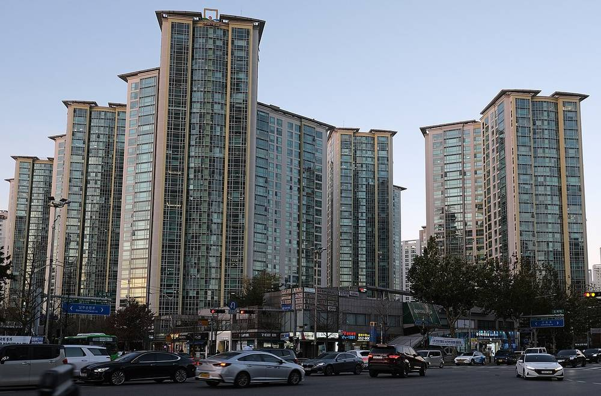
IEA, 한국 해상풍력 5년 전망 41% 낮춰…"송전망·인허가 지연", 2030년 재생에너지 100GW도 어렵다
2026~2030년 신규 준공 전망 2.8GW→1.7GW, 정부 목표 3.1GW와 격차…서남권 시범단지·안마 532MW 표류, 세계 전망도 27% 하향
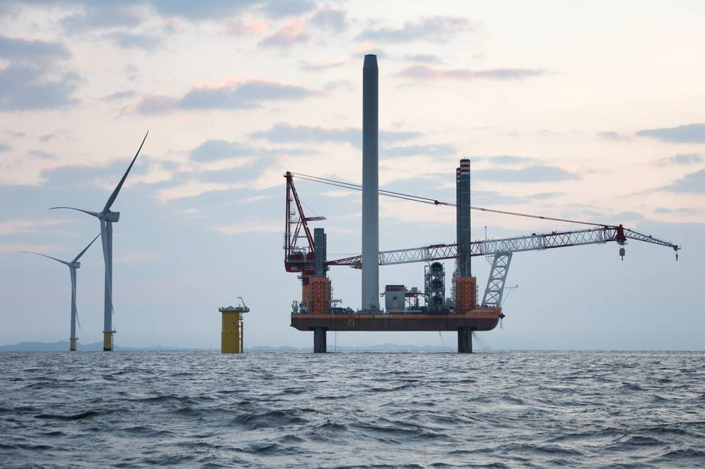
통신 '최적요금제 안내' 법 시행 한 달 넘도록 공회전…고지 주기 놓고 정부·통신 3사 이견
과기정통부 6개월마다 안 vs 통신사 주기 연장 요구…"늦어도 올해 안 첫 고지"


울산 375MW 부유식 해상풍력 '이스트블루파워', 동서발전·오션윈즈·금양그린파워 기술·금융 협력 점검
12일 기술교류회·경영진 간담회…포르투갈·프랑스 운영 경험 공유, 국내 기업 참여·유지보수 인력 양성도 논의

국회 정무위, 17일 금융법안 심사 재개…해킹 과징금·워크아웃법 연장 연내 처리 주목
여야, 소위 안건 협의 중…예금자보호법 특별계정 1년 연장·청년 보금자리론 위한 주금공법도 대기

제주 이창흠 초대 기후경제부지사 "풍력·햇빛 이익을 도민 소득으로"…주민참여형 사업을 도민펀드로 넓힌다
2035년 탄소중립 목표, 약 2GW 추자해상풍력 최우선…신규 발전사업 주민 채권·펀드 투자, 공유화기금은 취약계층·공동체 재원

제주에너지공사, 남는 풍력 전기를 수소로…ALK·PEM 수전해와 ESS 묶은 실증 착수
11개 기관 참여 국가 연구개발과제 착수회의…2028년 통합 실증운전, 출력제어 시간대엔 수전해 늘리는 '플러스DR' 모의 참여

美 미네소타 전력협동조합 크로우윙파워, 조합원에 약 300만 달러 돌려줘…11월 전기요금에서 차감
2010년분 출자배당 111만1,000달러에 도매 협동조합이 배정한 1992~1998년분 182만7,000달러 더해
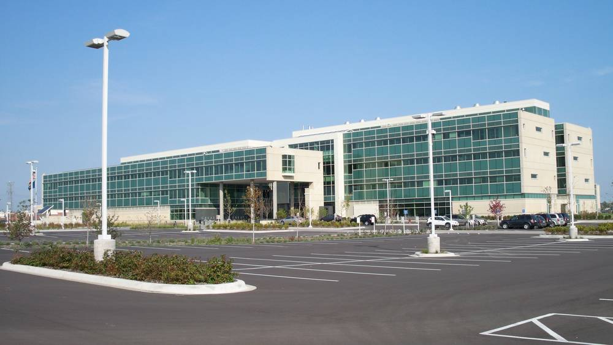
석유 최고가격 5회 연속 동결…휘발유 1,784원·경유 1,773원 12월 11일까지
정부 "물가 안정 효과 확인"…정유사 손실 보전에 예비비 4조2,000억 원, 종료 시점은 미정

美 테네시 태양광 단지에 소 15마리 방목…풀베기 75% 맡기고 설비 보강비는 3%만 더 들어
실리콘랜치 3.25MW 크리스티애나 단지, 패널 기울기 줄이는 '방목 모드'로 소와 설비 함께…최대 300MW 사업으로 넓힐 곳 찾는 중

캐나다 캘거리 전기·가스 판매사, 이익 100%를 지역 성소수자 단체에…"요금이 공동체 기금이 된다"
사회적기업 Q-TILITIES, 대표는 월급 안 받고 5년 안에 10만 달러 이상 환원 목표

美 애너하임 시영 전력, 태양광 150MW·배터리 138.5MW 20년 구매 계약…약 9억5,500만 달러
시의회 7대0 승인, 약 7만5,000가구분…배터리 성능 3개월 연속 90% 밑돌면 대금 안 내
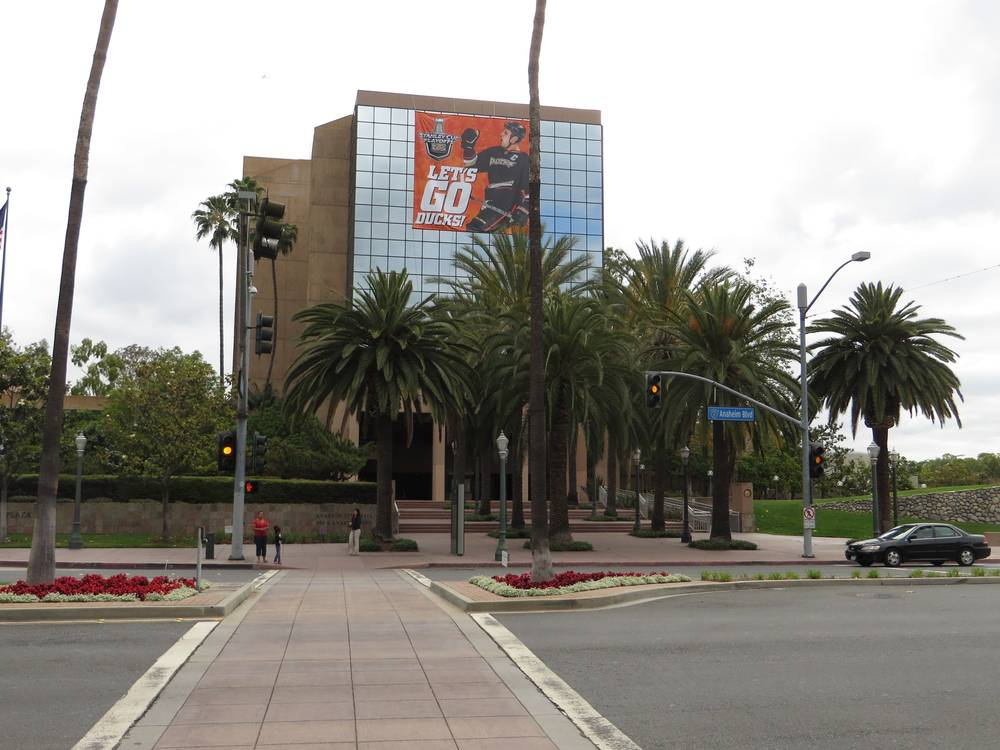
함평군, 빛그린국가산단 'RE100 시범산단'·재생에너지 자립도시 1호 추진…함평 쪽 330만㎡로 확장
"인근 태양광·풍력으로 산단 전력을"…근거 특별법은 아직 논의 단계
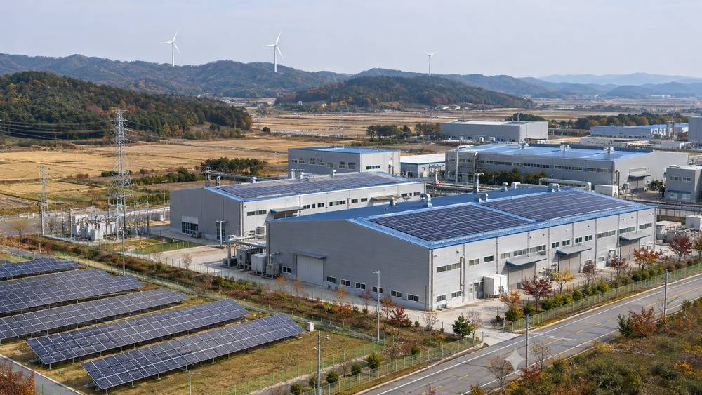
태양광 발전소 3만9,312곳 몰린 전북, 지역별 전력도매가격 차등화에 '비상'…발전단체 공대위 25일 결의대회
전국 발전소의 17.7%·설비 4,984MW…모의분석서 수도권·비수도권 ㎾h당 10.6원 차이, 27일 개정위원회 통과 땐 법적 대응
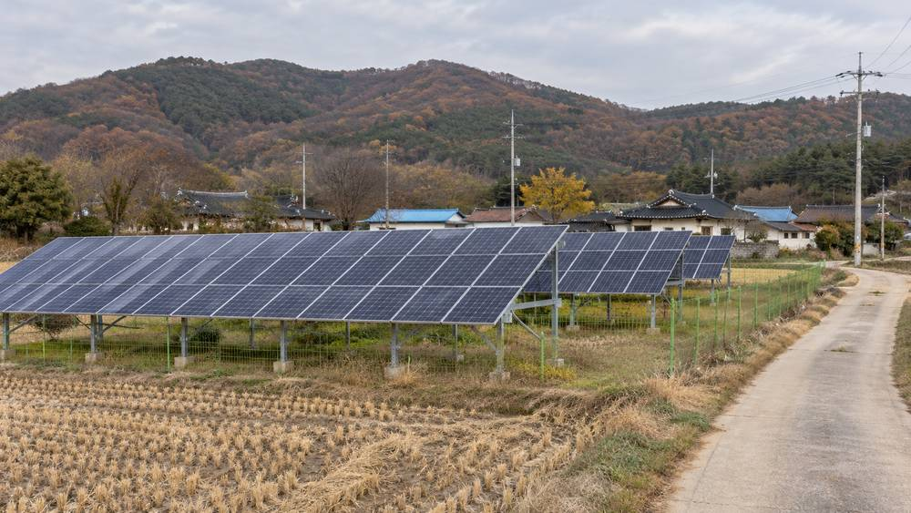
강원도 108억 원 현물출자한 대관령 풍력단지, 연 순이익 3억 원 그쳐…도의회 행감서 "경제성·주민 피해 다시 따져야"
강원개발공사 운영 단지 예상 매출 21억 원…유지보수·인건비 오르면 수익 더 줄 수도, 소음·저주파·그림자 깜박임 등 사회적 비용도 거론

SH 임대단지 지붕 태양광, 낮에 남는 전기는 관리비로 돌아오나…오중석 서울시의원 "요금상계 현황 공개하고 12월 말까지 전환 계획 내라"
LH가 세종 행복주택 238가구에서 공동주택 첫 요금상계 시작하자 같은 ZEB 3등급 고덕 온빛채 697가구 사례 따져…상계 안 되는 단지는 이유 목록부터

美 위스콘신 전기요금, 민간 전력회사 2020년 뒤 29% 올라…공영 14%·협동조합 15%의 두 배
연 8,000kWh 쓰는 가구 기준 민간 1,513달러·협동조합 1,313달러·시 공영 1,025달러
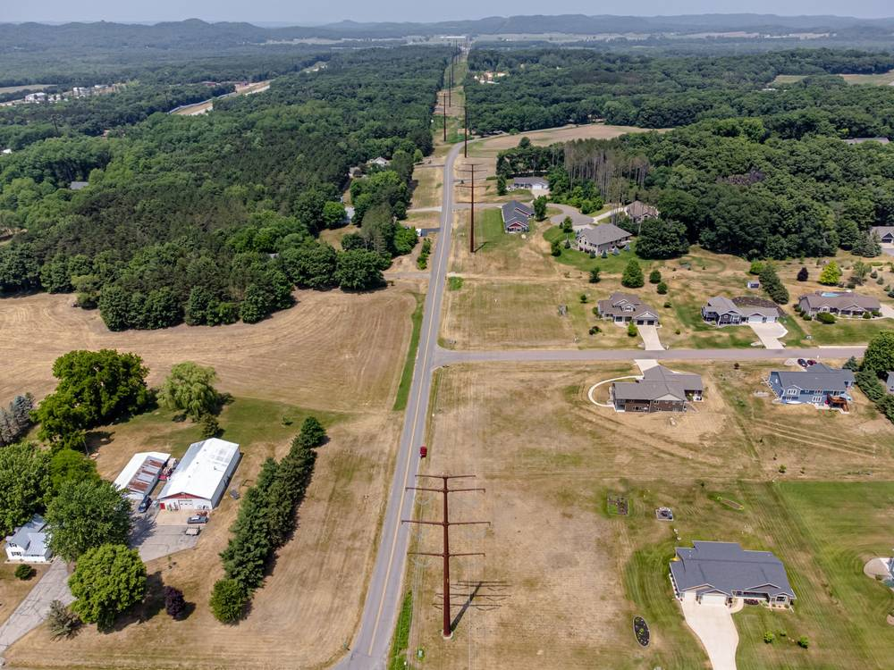
이탈리아 토르토나에 과학기술단지 주도 재생에너지 공동체…"참여자 전기요금 25~40% 절감"
첫 발전소 약 200kW로 시작해 750kW까지…토르토나 일대 18개 코무네 대상, 2026년 말 가동 목표

영국 셰틀랜드 "버려지는 풍력 전기로 섬 주민 요금 낮춘다"…의회 주도 '셰틀랜드 공동체 전력 프로젝트' 시동
가구 40%가 에너지빈곤인데 터빈 103기 바이킹 풍력은 송전 막혀 멈추기도…GB에너지·오프젬·SSE 등 실무단 참여, 2028년부터 시범사업 목표

뉴욕시에 '시 소유 재생에너지 개발공사' 세우자…시민단체 보고서 "공공 배터리 200MW만 깔아도 요금 연 1억7,000만 달러 절감"
기후·공공전력 단체 3곳 'PowerNYC' 제안…학교·병원·공공주택 지붕에 태양광·저장장치·지역 열망 직접 개발, 수익 다시 투자하는 자립형 공공 개발자

독일 쾰른 오센도르프, 에너지협동조합과 주택협동조합이 435가구에 세입자 태양광…저장장치 670kWh 붙여 전기요금 10% 싸게
건물 55동 지붕에 750kW, 단지 전기의 절반을 지붕에서…협동조합 "2027년 EEG 개정되면 작은 세입자 태양광은 못 짓는다"

BHESCo, 이스트본 전역으로 '태양광 동네' 사업 확대…전기요금 최대 25% 낮추기 목표
주택 소유자·세입자·지역 사업장 모두 대상…오프젬 에너지 보상 기금으로 운영
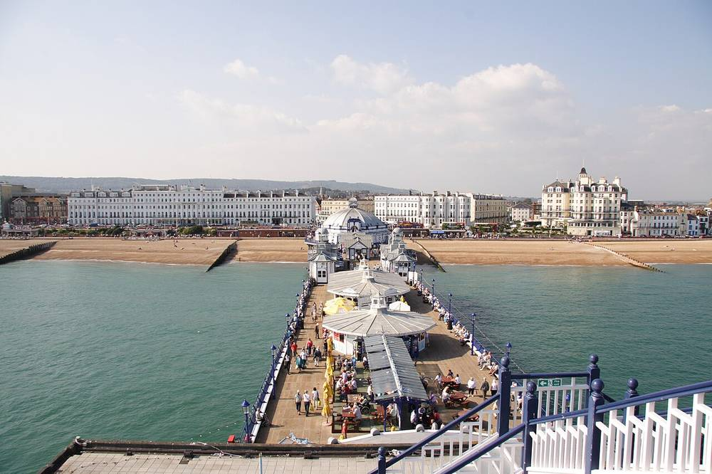
용인시정연구원 "반도체 RE100 수요를 시민 소득으로"…시민 투자·주민 참여·공공자산 태양광 담은 이익공유 모델 제안
이슈리포트 'YRI Insight 119호'…발전 수익 공유, 시공·유지관리 주민 참여, 정책금융·시민투자 연계, 인접 시군과 광역 협력 등 5가지 방안

신협, 시민 태양광에서 해상풍력·햇빛소득마을까지 재생에너지 금융 넓힌다…마을 발전시설 자금 최대 85% 대출
안산시민햇빛발전협동조합 발전소 60곳 짓는 데 힘 보탠 경험 살려 고창 해상풍력 1,000억 원 연계대출 참여, 에너지공단 이차보전으로 마을 이자 부담 덜어

이탈리아 에너지협동조합 ènostra, 2029년까지 자체 발전 3배·조합원 2만8,000명 목표…새 발전 투자 450만 유로는 조합원 출자로
10월 말 조합원 웨비나서 2026~2029 전략계획 발표…고객 공급 전력 약 60GWh→100GWh, 출처 추적 전력 비중 20%→40%, '사회적기업' 전환도 검토

국회서 에너지 기본권 토론회…요금 지원 넘어 최소 보장기준·참여권·편익공유권 법제화 제안
서왕진 의원 주최, 고재경 환경정의 공동대표는 에너지전환 참여권·정보권·편익공유권, 김재경 에너지경제연구원 선임연구위원은 기본에너지·공급중단 방지의 에너지법 명시 제안

조국혁신당, 초광역특구법안 당론 발의…재생에너지 사업은 총사업비 4% 이상 주민 투자 기회 먼저
주민·노동자 참여 상생협의회, 송·배전 공동접속설비 국가 지원 담고 주 52시간제 예외·지주회사 규제 완화는 빼…규제특례엔 5년 유효기간, 발의 단계

뉴질랜드 애슈버턴 지역의회, 오르는 전기요금에 태양광 검토…연 40만 달러 절감에 500만 달러 넘는 선투자 놓고 의원 이견
연 전기료 약 177만 달러, 다음 주 장기계획 예산 심의서 부서별 태양광 안 검토…"그 돈 도로에 쓰는 게 낫나" 대 "건물 지붕에 조금씩"

국민의힘, 내년 예산 삭감 대상에 '햇빛소득마을 등 재생에너지'·협동조합·사회연대경제 사업 꼽아
예결위원들 "재생에너지 1조8,210억 원은 증액중독, 협동조합 819억 원·사회연대경제 633억 원은 우리끼리 예산" 주장…햇빛소득마을만의 삭감액은 안 밝혀…정부는 같은 날 예산안 제안설명에서 햇빛소득마을 확산 등 재생에너지 보급 예산 두 배 증액을 설명했으나, 지목에 직접 답한 반론은 아직

이탈리아 폼페이아나 시, 학교·시청·공영주차장 태양광과 재생에너지공동체(CER)를 한 묶음 민간투자 입찰…공사비 65만7,099유로, 21년 계약
양허 전체 추정가치 141만1,638유로, 시가 운영사에 해마다 2만9,585유로 내는 구조…응찰 11월 27일 마감·30일 개찰, 제안사 우선권은 EU 판결 따라 없애
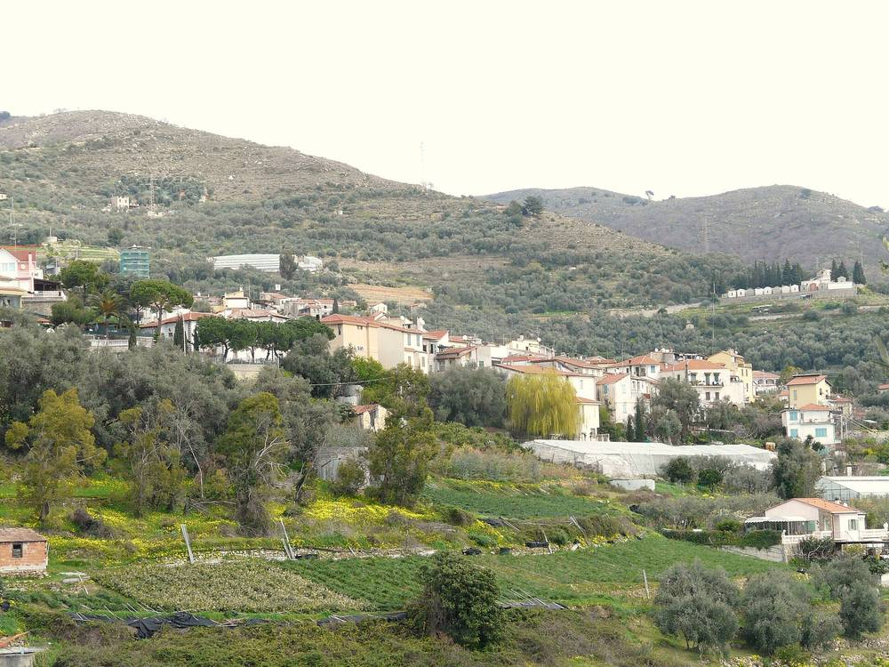
용인시정연구원 "재생에너지 혜택은 시민에게"…시민투자·주민 일자리·공공자산 태양광 담은 '용인형 이익공유 모델' 제안
이슈리포트 'YRI Insight 119호'…반도체 산단 전력설비 약 15GW 전망 속 시민협동조합·펀드 투자, 송전망 영향 주민 우선 출자권 검토, 공영주차장 51곳 중 17곳 태양광 계획 제출

남부발전·부산항만공사, 부산항 항만부지 육상풍력 공동개발 협약…해상풍력·태양광·ESS로 넓힐 계획
남부발전은 기술·재무 타당성 조사, 항만공사는 부지 제공·계통 연계 맡아…발전 용량·사업비·위치·일정은 아직 공개 안 돼
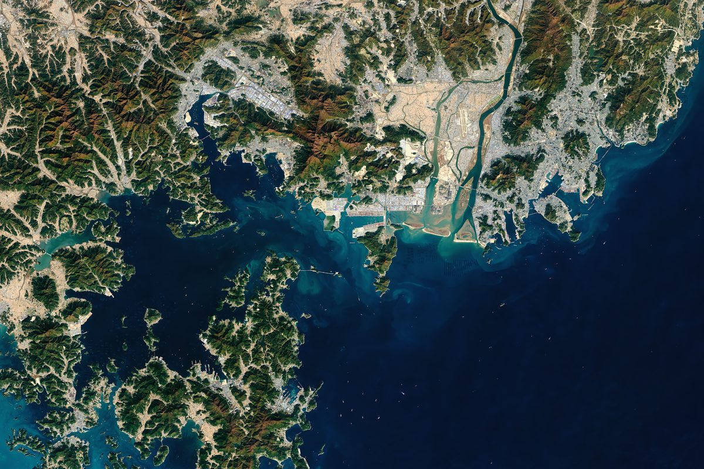
공공임대 아파트 태양광, 쓰고 남은 전기로 관리비 깎는다…LH, 세종 산울마을 4단지 238가구에 공동주택 첫 요금상계
태양광 246kW로 월 사용량의 약 49.1% 생산…LH "가구당 월평균 약 8,000원 추가 절감 기대", ZEB 5등급 이상 단지로 확대 검토
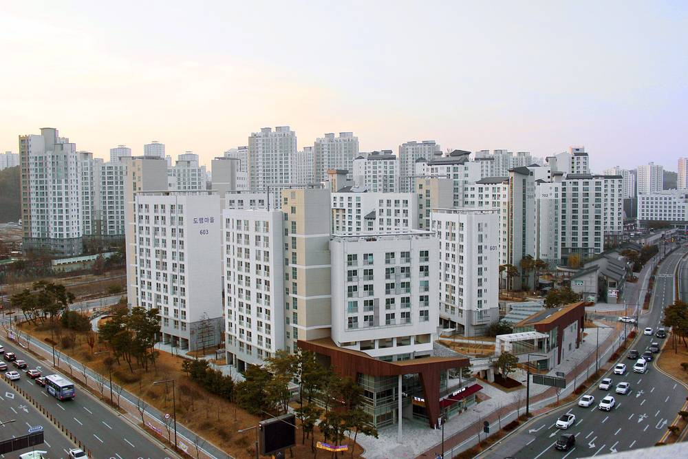
프랑스 도르도뉴 혼합경제회사 SEM 24, 광역 지자체 땅에 연 5,150MWh 태양광 준공…지역 제과 공장에 20년 고정가로 직접 판매
패널 7,668장·사업비 510만 유로 중 60만 유로는 누벨아키텐 지역 지원, 그랑 페리괴는 7ha를 30년 장기임대로 내주고 해마다 사용료…전력망 포화 때 출력 제한으로 저장 배터리 검토
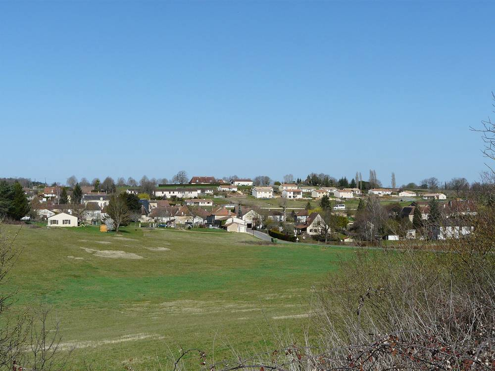
정부 '주민참여 우수사례' 한림해상풍력, 주민 몫 REC 수익에서 주민 회사채 이자 먼저 뗐다…로펌 3곳 "법 위반" 자문 의견
주민법인 3곳이 산 회사채 300억 원의 연 7% 이자를 가중치 0.3 추가 REC 수익에서 충당, 남은 돈만 '이익공유'로 지급…에너지공단 "절차 진행 중", 기후부 "문제 확인되면 개선", 사업자 "주민과 약정, 당국과 협의 중"

그리스, '에너지 공유 권리' 담은 전력시장 법안 의회 제출…다른 건물에서 만든 태양광 전기도 가정·중소기업·지자체가 나눠 쓴다
법안 12조로 전력법에 137Γ조 신설…6MW 이하 설비는 제3자가 운영 대행, 공공 소유 설비는 공유 전기의 평균 10% 이상을 취약가구에 돌리도록 노력해야

콜롬비아 정부 '에너지공동체' 태양광 사업, 패널 견적가가 시장가보다 높다는 문제 제기…대부분 공정 50% 못 미쳐 연말까지 연장 요청
2025년 말 공기업 3곳과 계약 17건·9,140억 페소, 2만8,544가구에 패널 6만221장…정부·전 차관 "가구당 비용으로 보면 과다 비용 없다"

프랑스 랑드 생폴레닥스, 옛 폐기물 적치장에 4.57MWc 시민 태양광…주민 투자 조직 CIER40 따로 꾸려
코뮌·에네르코프 누벨아키텐 등이 사업 회사에 참여하고 대출·공공 자본·시민 참여를 섞어 400만 유로 넘게 투자…랑드도는 태양광 1,413MW로 프랑스 도 가운데 1위지만 에너지 소비 감축은 4.2%에 그쳐

독일 치메츠하우젠 풍력 14기, 투자사는 '30년 최대 2,300만 유로' 계산서…시장은 반대, 가구당 전기 할인은 연 45유로
가동 첫 15년은 영업세 거의 없고 토지 임대료는 사유지 주인 몫…법정 분담금 연 약 28만2,000유로는 마을이 내는 군 분담금 240만 유로의 10분의 1 남짓

미국 클리블랜드 시영 전력, 여름 정전 뒤 요금 인상 요청…늘어난 수입으로 2028년 3,000만 달러 빌려 설비 개선
120년 된 시 소유 전력회사 CPP, 고정요금 신설·많이 쓸수록 비싼 요금 구조 제안…지역 재생에너지 직접 생산도 전략계획에, 시의회 "개선 일정 없인 승인 어려워"

신한자산운용, 주민수익공유 펀드·에너지 인프라 성장 펀드 합계 약 5,000억 원 결성…주민 펀드 첫 투자처로 대규모 해상풍력 주민참여 사업 확보
발전단지 인근 주민·주민조합에 지분·채권 투자 자금을 대고 발전수익 일부를 배당·이자로 돌려주는 구조…주민 펀드 단독 금액, 첫 투자 사업 이름, 주민 금리·배당 조건은 발표에 없어

베를린 공영 지역난방 회사 BEW, 유럽투자은행서 5억 유로 대출 한도…"2030년 석탄 끝내고 하수 열 대형 히트펌프로"
첫 2억5,000만 유로 서명·최장 25년…KfW 대출 10억 유로에 이어 2030년까지 약 35억 유로 투자, 상수도공사 하수 열·청소공사 소각장 증기 활용

스페인 엘프라트 '시민 에너지 공동체', 공유 태양광 지붕 4곳에서 19곳 1MW로 늘려…낮 시간 1,500가구분, 요금은 판매사보다 50% 낮게
시청 40%·지역 기업 40%·사용자 협회 20%가 지분 나눈 비영리 법인…지붕·투자 없이 가입만으로 참여, 밤 공급 위한 공동 배터리는 규제에 막혀 시범 단계

아르헨티나 코르도바 베르로타란 전력협동조합, 첫 태양광 800kW 준공…주택용 조합원 전기요금 15~20% 인하 추산
발전량은 조합이 주 전력공사에서 사 오는 전기의 약 3분의 1, 11월 고지서부터 반영…코르도바에선 배전 협동조합과 손잡은 솔라 공동체 12곳·11.4MW, 업체는 2027년 조합 17곳 40MW 내다봐
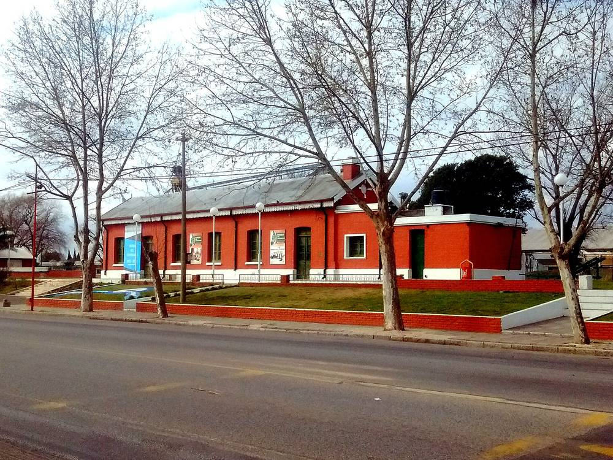
産業・経済
【釜山型太陽光所得②】企業PPAでは収益率2%台…「釜山市が電気を買い、排出権費用を節約」
釜山研究院「固定価格の上限150ウォン未満、駐車場の太陽光は145ウォンで売れば元本も回収できない」 / 釜山市の排出権購入費は7億ウォン台から20億ウォン超に…市がPPA購入者になれば内部収益率5%超 / 電力取引所「直接PPAの300kW以上高圧要件の緩和を検討」 / 自由討論で「協同組合に任せて」…送電線1.4km・部署の縦割りを指摘
江原道の境界地域4郡「軍の遊休地・日差し・水でエネルギー連帯を」…営農型太陽光の郡民ファンド、発電収益を基本所得に
鉄原・華川・楊口・麟蹄の政策フォーラム…「鉄原の農地の6割は外部所有、発電収益が外へ流出」、鉄原の太陽光と華川の揚水発電を結ぶ「境界地域エネルギー協力圏」構想
IEA、韓国の洋上風力5年見通しを41%下方修正…「送電網・許認可の遅れ」、2030年の再エネ100GWも困難
2026〜2030年の新規稼働見通し2.8GW→1.7GW、政府目標3.1GWと乖離…西南圏モデル団地・安馬532MWが漂流、世界見通しも27%下方修正
蔚山375MW浮体式洋上風力「イーストブルーパワー」、東西発電・オーシャンウィンズ・錦陽グリーンパワーが技術・金融協力を点検
12日に技術交流会・経営陣懇談会…ポルトガル・フランスの運営経験を共有、国内企業の参加や保守人材の育成も議論
済州のイ・チャンフム初代気候経済副知事「風と日差しの利益を道民の所得に」…住民参加型事業を道民ファンドへ拡大
2035年炭素中立目標、約2GWの楸子洋上風力を最優先…新規発電事業に住民が債券・ファンドで投資、共有化基金は脆弱層・共同体の財源に
済州エネルギー公社、余った風力の電気を水素に…ALK・PEM水電解とESSを組み合わせた実証に着手
11機関が参加する国家研究開発課題のキックオフ会議…2028年に統合実証運転、出力制御の時間帯は水電解を増やす「プラスDR」に模擬参加
米ミネソタの電力協同組合クロウ・ウィング・パワー、組合員に約300万ドルを還元…11月の電気料金から差し引き
2010年分の出資配当111万1,000ドルに、卸売協同組合が割り当てた1992～1998年分182万7,000ドルを加える
米テネシー州の太陽光発電所で牛15頭を放牧…草刈りの75%を任せ、設備補強費は3%増のみ
シリコンランチの3.25MWクリスチアナ発電所、パネルの傾きを抑える「放牧モード」で牛と設備が共存…最大300MW事業への拡大先を探す
カナダ・カルガリーの電気・ガス小売会社、利益の100％を地域の性的少数者団体へ…「料金が共同体の基金に」
社会的企業Q-TILITIES、代表は無給で5年以内に10万ドル以上の還元目標
米アナハイム市営電力、太陽光150MW・蓄電池138.5MWの20年購入契約…約9億5,500万ドル
市議会が7対0で承認、約7万5,000世帯分…蓄電池性能が3か月連続90%を下回れば代金支払わず
太陽光発電所3万9,312カ所が集中する全北、地域別の電力卸売価格差別化に「非常事態」…発電団体の共同対策委が25日に決起大会
全国の発電所の17.7％・設備4,984MW…模擬分析で首都圏と非首都圏にkWh当たり10.6ウォンの差、27日の改正委員会で通過すれば法的対応
江原道が108億ウォンを現物出資した大関嶺風力団地、年間純利益3億ウォンにとどまる…道議会の監査で「経済性と住民被害を改めて検証せよ」
江原開発公社が運営する団地の予想売上は21億ウォン…維持補修費や人件費が上がれば収益はさらに減る恐れ、騒音・低周波・シャドーフリッカーなど社会的費用も指摘
SH賃貸団地の屋根の太陽光、昼に余った電気は管理費に戻るのか…オ・ジュンソク・ソウル市議「料金相殺の現況を公開し、12月末までに転換計画を」
LHが世宗の幸福住宅238世帯で共同住宅初の料金相殺を始めたのを受け、同じZEB3等級の高徳オンビッチェ697世帯の事例を追及…相殺できない団地は理由のリストから
米ウィスコンシン州の電気料金、民間電力会社は2020年以降29%上昇…公営14%・協同組合15%の2倍
年8,000kWh使う世帯で民間1,513ドル・協同組合1,313ドル・市営1,025ドル
イタリア・トルトーナに科学技術パーク主導の再エネ共同体…「参加者の電気料金を25～40%削減」
最初の発電所は約200kWで始め750kWまで拡大…トルトーナ一帯の18のコムーネが対象、2026年末の稼働目標
英シェトランド「捨てられる風力の電気で島民の電気料金を下げる」…議会主導の「シェトランド・コミュニティ電力プロジェクト」始動
世帯の40%がエネルギー貧困なのに、103基のバイキング風力は送電が詰まり停止することも…GBエナジー・Ofgem・SSEなどが作業部会に参加、2028年から試行事業を目標
ニューヨーク市に「市営の再エネ開発公社」を…市民団体の報告書「公共蓄電池200MWだけで料金を年1億7,000万ドル削減」
気候・公共電力の3団体が「PowerNYC」を提案…学校・病院・公営住宅の屋根に太陽光・蓄電池・地域熱網を直接開発し、収益を再投資する自立型の公共開発者
独ケルン・オッセンドルフ、エネルギー協同組合と住宅協同組合が435世帯に賃借人向け太陽光…蓄電池670kWhで電気料金を約10%安く
建物55棟の屋根に750kW、団地の電力の約半分を屋根から…協同組合「2027年のEEG改正で小規模な賃借人電力は建てられなくなる」
BHESCo、イーストボーン全域へ「ソーラー・パワード・コミュニティーズ」を拡大…電気料金を最大25%安くすることを目標に
持ち家世帯・賃借人・地域の事業所が対象…オフジェムのエネルギー補償基金で運営
龍仁市政研究院「半導体のRE100需要を市民の所得に」…市民投資・住民参加・公共資産太陽光を盛り込んだ利益共有モデルを提案
イシューリポート「YRI Insight 119号」…発電収益の共有、施工・保守への住民参加、政策金融と市民投資の連携、隣接市郡との広域協力など5つの方策
韓国の信用協同組合「信協」、市民太陽光から洋上風力・「日差し所得村」まで再エネ金融を拡大…村の発電施設資金を最大85％融資
安山市民太陽光発電協同組合の発電所60カ所建設を支えた経験を生かし、高敞洋上風力に1,000億ウォンの連携融資、エネルギー公団の利子補給で村の負担軽減
イタリアのエネルギー協同組合ènostra、2029年までに自前の発電を3倍・組合員2万8,000人目標…新規発電投資450万ユーロは組合員の出資で
10月末の組合員向けウェビナーで2026~2029年戦略計画を発表…顧客への供給電力は約60GWh→100GWh、出所を追跡できる電力の比率は20%→40%、「社会的企業」への転換も検討
国会でエネルギー基本権討論会…料金支援を超え最低保障基準・参加権・便益共有権の法制化を提案
ソ・ワンジン議員が主催、環境正義のコ・ジェギョン共同代表はエネルギー転換への参加権・情報権・便益共有権を、エネルギー経済研究院のキム・ジェギョン先任研究委員は基本エネルギーと供給停止防止のエネルギー法明記を提案
韓国の祖国革新党、超広域特区法案を党論として発議…再生可能エネルギー事業では総事業費の4%以上を住民に投資機会として優先提供
住民・労働者が参加する相生協議会、送配電の共同接続設備への国の支援を盛り込み、週52時間制の例外や持株会社規制の緩和は除外…規制特例には5年の有効期間、発議段階
ニュージーランド・アシュバートン地区議会、上がる電気料金で太陽光を検討…年40万ドル節約に500万ドル超の先行投資で議員の意見割れる
年間電気代は約177万ドル、来週からの長期計画予算審議で部署ごとの太陽光案を検討…「その金は道路に回すべきか」対「建物の屋根に少しずつ」
国民の力、来年度予算の削減対象に「日差し所得村など再生可能エネルギー」・協同組合・社会連帯経済事業を挙げる
予算決算特別委員ら「再エネ1兆8,210億ウォンは増額中毒、協同組合819億ウォン・社会連帯経済633億ウォンは身内予算」と主張…日差し所得村単独の削減額は示さず…政府は同日の予算案提案説明で日差し所得村の拡大など再エネ普及予算の倍増を説明したが、名指しに直接答えた反論はまだ
イタリア・ポンペイアーナ市、学校・市役所・公営駐車場の太陽光と再生可能エネルギー共同体（CER）を一括した民間投資入札…工事費65万7,099ユーロ、21年契約
コンセッション全体の推定価値141万1,638ユーロ、市が事業者に毎年2万9,585ユーロを支払う仕組み…応札は11月27日締め切り・30日開札、提案者の優先権はEU判決を受けて廃止
龍仁市政研究院「再生エネルギーの恩恵は市民に」…市民投資・住民の雇用・公共資産の太陽光を盛り込んだ「龍仁型利益共有モデル」を提案
イシューレポート「YRI Insight 119号」…半導体産業団地の電力設備は約15GWの見通し、市民協同組合・ファンドによる投資、送電網の影響を受ける住民への優先出資権を検討、公営駐車場51カ所のうち17カ所で太陽光計画提出
韓国南部発電・釜山港湾公社、釜山港の港湾用地で陸上風力の共同開発協約…洋上風力・太陽光・ESSへ広げる計画
南部発電は技術・財務面の事業性調査、港湾公社は用地提供と系統連系を担当…発電容量・事業費・位置・日程はまだ公表されず
公共賃貸マンションの太陽光、使い切れなかった電気で管理費を減らす…LH、世宗サヌル村4団地238世帯で共同住宅初の料金相殺
太陽光246kWで月使用量の約49.1%を発電…LH「1世帯当たり月平均約8,000ウォンの追加節減を期待」、ZEB5等級以上の団地への拡大を検討
フランス・ドルドーニュの混合経済会社SEM 24、広域自治体の土地に年5,150MWhの太陽光発電所が完成…地元の製菓工場に20年固定価格で直接販売
パネル7,668枚・事業費510万ユーロのうち60万ユーロはヌーヴェル＝アキテーヌ地域圏が支援、グラン・ペリグーは7haを30年の長期賃貸で提供し毎年使用料…送電網の飽和時の出力制限で蓄電池を検討
政府の「住民参加優良事例」翰林洋上風力、住民分のREC収益から住民社債の利息を先に差し引く…法律事務所3社が「法違反」との諮問意見
住民法人3社が購入した社債300億ウォンの年7%の利息を、加重値0.3の追加REC収益で賄い、残りだけを「利益共有」として支給…エネルギー公団「手続き中」、気候部「問題が確認されれば改善」、事業者「住民と約定、当局と協議中」
ギリシャ、「エネルギー共有の権利」を盛り込んだ電力市場法案を議会に提出…別の建物でつくった太陽光の電気も家庭・中小企業・自治体が分け合う
法案第12条で電力法に第137Γ条を新設…6MW以下の設備は第三者が運営を代行、公共所有の設備は共有電力の平均10%以上を脆弱世帯に回すよう努める
コロンビア政府の「エネルギーコミュニティ」太陽光事業、パネルの見積価格が市場価格より高いとの問題提起…大半が進捗50%未満で年末までの延長を要請
2025年末に公営企業3社と契約17件・9,140億ペソ、2万8,544世帯にパネル6万221枚…政府・前次官「世帯当たり費用で見れば過大な費用はない」
フランス・ランド県サン＝ポール＝レ＝ダックス、旧廃棄物置き場に4.57MWcの市民太陽光…住民投資組織CIER40を別に設立
コミューンやエネルコープ・ヌーヴェル＝アキテーヌなどが事業会社に参加し、融資・公的資本・市民参加を組み合わせて400万ユーロ超を投資…ランド県は太陽光1,413MWでフランスの県で首位だが、エネルギー消費の削減は4.2%にとどまる
独ツィーメッツハウゼンの風車14基、投資会社は「30年で最大2,300万ユーロ」と試算…町長は反対、世帯あたりの電気割引は年45ユーロ
稼働後15年間は営業税がほぼなく、土地賃料は私有地の所有者へ…法定の自治体分担金年約28万2,000ユーロは町が納める郡分担金240万ユーロの10分の1余り
米クリーブランドの市営電力、夏の停電後に料金値上げを要請…増収分を元手に2028年に3,000万ドルを借り入れ設備改修
120年の歴史を持つ市有電力会社CPP、固定料金の新設と使うほど割高になる料金体系を提案…地域の再生可能エネルギーによる自家発電も戦略計画に、市議会「改善の日程なしに承認は難しい」
新韓資産運用、住民収益共有ファンドとエネルギーインフラ成長ファンドを計約5,000億ウォンで結成…住民ファンドの初の投資先に大規模洋上風力の住民参加事業を確保
発電団地周辺の住民・住民組合に持分・債券投資資金を供給し、発電収益の一部を配当・利息で還元する仕組み…住民ファンド単独の金額、初の投資事業名、住民向け金利・配当条件は発表されず
ベルリンの公営地域暖房会社BEW、欧州投資銀行から5億ユーロの融資枠…「2030年に石炭をやめ、下水熱の大型ヒートポンプへ」
第1弾2億5,000万ユーロに署名・最長25年…KfWの融資10億ユーロに続き2030年までに約35億ユーロを投資、上下水道公社の下水熱・清掃公社の焼却施設の蒸気を活用
スペイン・エル・プラットの「市民エネルギー共同体」、共有太陽光の屋根を4カ所から19カ所・1MWに拡大…昼間1,500世帯分、料金は小売事業者より50%安く
市役所40%・地元企業40%・利用者協会20%が出資を分け合う非営利法人…屋根も投資もなしに加入だけで参加、夜間供給のための共同蓄電池は規制に阻まれ試験段階
アルゼンチン・コルドバ州ベロタランの電力協同組合、初の太陽光800kWが完成…住宅用組合員の電気料金15〜20%引き下げを試算
発電量は組合が州電力公社から買う電気の約3分の1、11月の請求書から反映…コルドバでは配電協同組合と組んだソーラー・コミュニティ12カ所・11.4MW、企業は2027年に組合17団体で40MWを見込む
产业·经济
【釜山型阳光收入②】仅靠企业PPA收益率2%左右…"由釜山市购电，节省排放权费用"
釜山研究院："固定价格上限低于150韩元，停车场光伏以145韩元出售连本金都收不回" / 釜山市排放权购买费从7亿增至20亿韩元以上…市政府成为PPA买方则内部收益率超过5% / 电力交易所："研究放宽直接PPA的300kW以上高压条件" / 自由讨论："交给合作社吧"…指出1.4公里线路缺口与部门壁垒
江原道边境四郡：以军队闲置用地、阳光和水资源结成“能源联盟”…提议设立农光互补郡民基金、发电收益转为基本收入
铁原、华川、杨口、麟蹄政策论坛…“铁原60%农地归外地人所有，发电收益外流”，提出连接铁原光伏与华川抽水蓄能的“边境地区能源合作圈”
IEA将韩国海上风电五年预测下调41%…“输电网与审批延误”，2030年可再生能源100吉瓦目标也难实现
2026至2030年新增并网预测由2.8吉瓦降至1.7吉瓦，与政府3.1吉瓦目标差距拉大…西南圈示范园区、安马532兆瓦项目搁浅，全球预测也下调27%
蔚山375兆瓦浮式海上风电“东蓝电力”项目：东西发电、Ocean Winds、锦阳绿色电力检视技术与融资合作
12日举行技术交流会和高管座谈会…分享葡萄牙、法国运营经验，并讨论国内企业参与和运维人才培养
济州首任气候经济副知事李昌钦：“让风和阳光的收益成为道民收入”…把居民参与型项目扩大为道民基金
以2035年碳中和为目标，优先推进约2吉瓦楸子海上风电…新发电项目由居民以债券、基金投资，共享基金用于弱势群体和社区
美国田纳西光伏电站放牧15头牛……承担75%除草工作，设备加固成本仅增加3%
硅牧场公司3.25兆瓦克里斯蒂安娜电站以限制组件倾角的"放牧模式"让牛与设备共存……正寻找可推广至最大300兆瓦项目的场址
全北集中了39,312座太阳能电站，电力批发价格分区差别化令其“告急”——发电团体联合对策委25日举行誓师大会
占全国电站17.7%、装机4,984MW；模拟分析显示首都圈与非首都圈每千瓦时相差10.6韩元，若27日修订委员会通过将诉诸法律
江原道以108亿韩元实物出资的大关岭风电场年净利润仅3亿韩元…道议会监察："重新审视经济性和居民受害"
江原开发公社运营的风电场预计年销售额21亿韩元…维修费和人工成本上涨可能进一步压缩利润，噪音、低频、阴影闪烁等社会成本也被提及
SH租赁小区屋顶太阳能白天余电能否抵扣物业费…首尔市议员吴仲锡："公开电费抵扣现状，12月底前提交转换计划"
LH在世宗幸福住宅238户启动公寓首例电费抵扣后，追问同为ZEB三级的高德Onbitche 697户…无法抵扣的小区先列出原因清单
美国威斯康星州电价：民营电力公司2020年后上涨29%，是公营14%、合作社15%的两倍
以年用电8,000kWh的家庭计算，民营1,513美元、合作社1,313美元、市营1,025美元
英国设得兰"用弃风电力降低岛民电费"…议会主导的"设得兰社区电力项目"启动
40%家庭陷入能源贫困，拥有103台风机的维京风电场却因输电受阻时常停机…GB能源、Ofgem、SSE等加入工作组，目标2028年起开展试点
为纽约市设立"市属可再生能源开发公司"…民间团体报告称"仅建200兆瓦公共电池即可每年节省电费1.7亿美元"
三家气候与公共电力团体提出"PowerNYC"…在学校、医院和公共住房屋顶直接开发光伏、储能和区域热网，以收益再投资的自立型公共开发商
德国科隆奥森多夫，能源合作社与住房合作社为435户租户建屋顶光伏…配670kWh储能，电费便宜约10%
55栋楼屋顶共750kW，小区约一半用电来自屋顶…合作社警告：2027年EEG修订后小型租户电力项目将无法建设
龙仁市政研究院：“把半导体RE100需求转化为市民收入”…提出包含市民投资、居民参与和公共资产光伏的利益共享模式
专题报告《YRI Insight 第119期》…提出发电收益共享、居民参与施工与运维、政策性金融与市民投资联动、与邻近市郡广域合作等5项方案
韩国信用合作社“信协”将可再生能源金融从市民光伏扩展至海上风电和“阳光收入村”…村级发电设施资金最高可贷85%
凭借支持安山市民阳光发电合作社建成60座电站的经验，参与高敞海上风电1,000亿韩元联合贷款，能源公团贴息减轻村庄利息负担
意大利能源合作社ènostra提出到2029年自有发电量增至3倍、社员达2万8,000人目标…450万欧元新增发电投资由社员出资筹集
10月底在面向社员的网络研讨会上发布2026~2029年战略计划…向客户供电由约60GWh增至100GWh，可追溯来源电力占比由20%升至40%，并研究转型为"社会企业"
国会举行能源基本权讨论会…提议超越电费补贴，将最低保障标准、参与权和利益共享权写入法律
议员Seo Wang-jin主办，环境正义共同代表Ko Jae-kyung提出能源转型参与权、知情权和利益共享权，能源经济研究院高级研究委员Kim Jae-kyung建议在能源法中写明基本能源和防止断供
韩国祖国革新党以党论提出超广域特区法案…可再生能源项目须优先向居民提供总投资4%以上的投资机会
设立居民和劳动者参与的共生协议会，国家支持输配电共同接入设施，删除每周52小时工作制例外和控股公司规制放宽…规制特例设5年有效期，仍处提案阶段
新西兰阿什伯顿区议会因电费上涨研究光伏…年省40万元需先投入逾500万元，议员意见分歧
年电费约177万元，下周起的长期规划预算审议将讨论各部门光伏方案…"这笔钱是否该用在道路上"对"在建筑屋顶上一点点装"
国民力量党将"阳光收入村等可再生能源"、合作社和社会连带经济项目列为明年预算削减对象
预决算特别委员会委员称"可再生能源1.821万亿韩元属增额成瘾，合作社819亿韩元、社会连带经济633亿韩元是自己人预算"…未说明阳光收入村单独削减额…政府同日在预算案提案说明中表示阳光收入村推广等可再生能源普及预算将翻倍，但尚无直接回应点名的反驳
意大利蓬佩亚纳镇将学校、镇政府和公共停车场光伏与可再生能源社区（CER）打包进行社会资本招标…工程投资65.7099万欧元，合同21年
特许经营总估值141.1638万欧元，镇政府每年向运营商支付2.9585万欧元…11月27日截止投标、30日开标，依欧盟法院判决取消发起人优先权
龙仁市政研究院："可再生能源的好处应归市民"…提出包含市民投资、居民就业、公共资产光伏的"龙仁型收益共享模式"
议题报告《YRI Insight》第119期…预计半导体产业园区电力设施约15GW，提出市民合作社和基金投资、研究向受输电网影响居民提供优先出资权，51处公营停车场中17处已提交光伏计划
韩国南部发电与釜山港湾公社签署釜山港港区用地陆上风电共同开发协议…计划扩展至海上风电、太阳能和储能
南部发电负责技术与财务可行性研究，港湾公社负责提供用地和电网接入…装机容量、投资额、位置和时间表尚未公布
公租公寓光伏用余电抵减物业费…LH在世宗山蔚村4区238户首次在共同住宅实施电费抵扣
246kW光伏发电量约占月用电量的49.1%…LH"预计每户每月平均再省约8,000韩元"，研究推广至ZEB 5级以上小区
法国多尔多涅混合经济公司SEM 24在区域政府土地上建成年发电5,150MWh光伏电站…以20年固定价格直接售电给当地甜点工厂
光伏板7,668块，项目费用510万欧元中60万欧元由新阿基坦大区资助，大佩里格以30年长期租赁提供7公顷土地并每年收取使用费…电网饱和时出力受限，正研究加装储能电池
政府"居民参与优秀案例"翰林海上风电从居民应得REC收益中先扣居民所购公司债利息…三家律师事务所咨询意见认为"违法"
三家居民法人认购的300亿韩元公司债年息7%由加权0.3的追加REC收益支付，余额才以"收益共享"名义发放…能源公团称"程序进行中"，气候部称"发现问题将改进"，企业称"与居民有约定，正与主管部门协商"
希腊向议会提交含“能源共享权”的电力市场法案…其他建筑产生的光伏电力也可由家庭、中小企业和地方政府分享
法案第12条在电力法中新增第137Γ条…6MW以下设施可由第三方代为运营，公共所有设施应尽力把平均10%以上的共享电力分给弱势家庭
哥伦比亚政府“能源社区”光伏项目被指光伏板报价高于市价…多数进度不足50%，申请延期至年底
2025年底与3家国有企业签订17份合同、金额9,140亿比索，为2万8,544户安装6万221块光伏板…政府和前副部长称“按每户成本看不存在超额费用”
法国朗德省圣保罗-莱达克斯在旧废弃物堆放场建成4.57MWc市民光伏电站…另设居民投资组织CIER40
市镇与新阿基坦Enercoop等参与项目公司，结合贷款、公共资本和市民参与投资逾400万欧元…朗德省光伏装机1,413MW居法国各省之首，但能源消费仅减少4.2%
德国齐梅茨豪森14台风机，投资方算出‘30年最多2,300万欧元’…镇长反对，每户电费优惠一年仅45欧元
投运后头15年几乎没有营业税，土地租金归私人地主…法定地方分成每年约28万2,000欧元，仅相当于该镇缴纳的县分摊款240万欧元的十分之一多
美国克利夫兰市营电力公司在夏季停电后申请涨价…以增收为基础2028年借款3,000万美元改造设施
拥有120年历史的市属电力公司CPP提议新设固定费并实行用电越多单价越高的结构…以本地可再生能源自行发电也写入战略计划，市议会称“没有改善时间表难以批准”
新韩资产运用设立居民收益共享基金与能源基础设施成长基金，合计约5,000亿韩元…居民基金首个投资对象锁定大型海上风电居民参与项目
向发电园区周边居民和居民组合提供股权、债券投资资金，并以分红、利息形式返还部分发电收益…居民基金单独规模、首个投资项目名称及居民利率和分红条件均未公布
柏林公营区域供热公司BEW获欧洲投资银行5亿欧元贷款额度，"2030年告别煤炭，改用污水热大型热泵"
首批2.5亿欧元已签署、期限最长25年；继KfW 10亿欧元贷款之后，2030年前投资约35亿欧元，利用供水公司污水热和清洁公司焚烧厂蒸汽
西班牙埃尔普拉特"市民能源共同体"将共享光伏屋顶从4处扩至19处、达1MW…可满足1,500户白天用电，电价比售电公司低50%
市政府40%、本地企业40%、用户协会20%分持股份的非营利法人…无需屋顶和投资、加入即可参与，夜间供电所需的共享电池受法规限制仍处试点阶段
阿根廷科尔多瓦省贝罗塔兰电力合作社首座800kW光伏电站落成…预计住宅社员电费下降15~20%
发电量约为合作社从省电力公司购电量的三分之一，11月账单起体现…科尔多瓦与配电合作社合作的"太阳能社区"已有12个、11.4MW，企业预计2027年17家合作社参与40MW项目
Industry & Economy
[Busan Sunlight Income ②] Corporate PPAs yield about 2%; researchers propose the city buy the power and save on emission allowances
Busan Development Institute: fixed-price cap below 150 won, parking-lot solar sold at 145 won cannot recover its principal / Busan City's allowance purchases rise from 700 million won to over 2 billion won; with the city as PPA buyer, IRR tops 5% / KPX: easing the 300kW high-voltage requirement for direct PPAs is under review / Open discussion: "Leave it to cooperatives"; 1.4km grid gap and departmental silos raised
Four Gangwon border counties urged to form an 'energy alliance' of idle military land, sun and water, with a citizens' agrivoltaics fund paying a basic income
Cheorwon-Hwacheon-Yanggu-Inje policy forum: '60% of Cheorwon farmland is owned by outsiders, so power profits leak out'; proposal for a border-region energy zone linking Cheorwon solar and Hwacheon pumped storage
IEA cuts Korea's five-year offshore wind outlook by 41%, citing grid and permitting delays; 100 GW renewables goal for 2030 also out of reach
New capacity expected in 2026-2030 falls from 2.8 GW to 1.7 GW, far below the government's 3.1 GW target; Southwest pilot complex and 532 MW Anma project stalled, global outlook down 27%
Partners review technology and financing for Ulsan's 375 MW 'East Blue Power' floating offshore wind project
Korea East-West Power, Ocean Winds and Keumyang Green Power met on the 12th, sharing experience from Portugal and France and discussing local supply chains and O&M training
Jeju's first climate-economy vice governor: 'Turn wind and sun into residents' income' with a province-wide citizens' fund
Aiming for carbon neutrality by 2035 with the ~2 GW Chuja offshore wind farm as top priority; residents to invest via bonds and funds, shared fund to support vulnerable households and communities
Jeju Energy Corporation starts pilot turning surplus wind power into hydrogen with ALK and PEM electrolysers plus storage
Kick-off for national R&D project with 11 partners; integrated trial operation from 2028 and simulated 'plus DR' to absorb power during curtailment hours
Minnesota electric co-op Crow Wing Power returns almost $3 million to members as credit on November bills
About $1.111 million in 2010 capital credits plus $1.827 million assigned for 1992-1998 by its former wholesale co-op
Tennessee solar farm grazes 15 cattle under its panels, handing them 75% of the mowing for just 3% more in hardening costs
Silicon Ranch's 3.25MW Christiana site uses a "graze mode" that limits panel tilt so cows and equipment coexist; the developer is scouting projects of up to 300MW for the model
Calgary power and gas retailer gives 100% of profits to local LGBTQ+ groups: 'bills become a community fund'
Social enterprise Q-TILITIES: founder takes no salary and aims to give back at least $100,000 within five years
Anaheim's city-owned utility signs 20-year deal for 150 MW of solar and 138.5 MW of batteries, worth about $955 million
Council approves 7-0; enough for about 75,000 homes, with no battery payment if performance falls below 90% for three straight months
Hampyeong pushes Bitgreen national industrial complex as RE100 pilot and Korea's first renewable self-reliant city
County plans to power the park with nearby solar and wind and expand its share to 3.3 million m²; the enabling special act is still under discussion
North Jeolla, home to 39,312 solar plants, on alert over regional wholesale power pricing; generators' joint committee to rally on Nov. 25
Province holds 17.7% of Korea's solar plants and 4,984MW; simulation shows 10.6 won/kWh gap between capital region and the rest, legal action if rule change passes on Nov. 27
Daegwallyeong Wind Farm, Backed by 10.8 Billion Won of Gangwon Province Assets, Earns Only 300 Million Won a Year; Provincial Councillors Call for Review of Economics and Harm to Residents
The farm run by Gangwon Development Corporation expects 2.1 billion won in annual revenue; rising maintenance and labour costs could cut profit further, and noise, low-frequency sound and shadow flicker were raised as social costs
Is Surplus Daytime Power From Rooftop Solar on SH Rental Estates Cutting Tenants' Fees? Seoul Councillor Oh Jung-seok Demands Net-Billing Data and a Conversion Plan by End of December
After LH began Korea's first apartment net billing at 238 'happy housing' units in Sejong, Oh asked about SH's 697-unit Godeok Onbitche, built to the same ZEB grade 3; complexes that cannot switch should be listed with reasons
Wisconsin power bills: investor-owned utilities up 29% since 2020, twice the rise at municipal (14%) and co-op (15%) utilities
For a home using 8,000kWh a year: $1,513 with investor-owned, $1,313 with co-ops, $1,025 with municipal utilities
Science Park in Tortona, Italy, Launches Renewable Energy Community, Projecting 25-40% Savings on Members' Bills
First plant of about 200kW to grow to 750kW, open to 18 municipalities around Tortona, with operation targeted by the end of 2026
Shetland Launches Council-Led "Community Power Project" to Turn Surplus Wind into Cheaper Electricity for Islanders
40% of households are in fuel poverty while the 103-turbine Viking wind farm is at times switched off by grid bottlenecks; GB Energy, Ofgem and SSE join working group aiming for trials from 2028
Advocates Urge New York City to Create a City-Owned Renewable Developer, Saying 200MW of Public Batteries Alone Could Save Ratepayers $170 Million a Year
Three climate and public power groups propose "PowerNYC" to build solar, storage and thermal energy networks on schools, hospitals and public housing, recycling revenue into new projects
Cologne's Ossendorf: Energy and Housing Co-ops Bring Tenant Solar to 435 Households, With 670kWh of Storage Cutting Power Bills by About 10%
750kW on the roofs of 55 buildings supplies about half the estate's electricity; co-op warns 2027 EEG reform would make small tenant-power projects unviable
BHESCo Extends Its Solar Powered Communities Programme to All of Eastbourne, Aiming for Electricity Up to 25% Cheaper
Homeowners, tenants and local businesses can all take part; programme runs on the Ofgem Energy Redress Scheme
Yongin Research Institute Proposes Turning Chipmakers' RE100 Demand Into Citizen Income Through a Profit-Sharing Model
Issue report YRI Insight No. 119 sets out five measures, including shared generation revenue, resident jobs in construction and maintenance, linking policy finance with citizen investment, and cooperation with neighbouring cities and counties
Korea's Shinhyup Credit Unions Widen Renewable Finance From Citizen Solar to Offshore Wind and 'Sunlight Income Villages', Lending Up to 85% of Village Plant Costs
Building on its support for the 60 plants of the Ansan citizens' solar cooperative, Shinhyup joins a 100 billion won syndicated loan for Gochang offshore wind, while an energy agency interest subsidy eases village borrowing costs
Italian energy cooperative ènostra aims to triple its own generation and reach 28,000 members by 2029, with €4.5 million of new generation funded by members
2026-2029 strategic plan presented to members in a late-October webinar: energy supplied to customers to rise from about 60GWh to 100GWh, traceable-source share from 20% to 40%, conversion to a 'social enterprise' under study
National Assembly forum on energy rights proposes writing minimum guarantees, participation and benefit-sharing rights into law, beyond bill subsidies
Hosted by lawmaker Seo Wang-jin; Ko Jae-kyung of Environmental Justice proposed rights to participate in, be informed about and share the benefits of the energy transition, and Kim Jae-kyung of the Korea Energy Economics Institute called for basic energy and protection from disconnection to be set out in the Energy Act
Rebuilding Korea Party tables super-regional special zone bill as party policy, giving residents first right to invest at least 4% of total costs in renewable energy projects
Bill sets up co-prosperity councils with residents and workers and state support for shared grid connection facilities, while dropping the 52-hour workweek exemption and holding-company deregulation; regulatory exemptions would expire after five years, and the bill has only just been introduced
New Zealand's Ashburton council weighs solar as power bills rise, split over $5m-plus upfront cost to save $400,000 a year
Council spends about $1.77m a year on electricity; department solar proposals go to long-term plan budget talks next week — "spend it on roads?" versus "bite-size" rooftop panels
People Power Party targets "sunlight income villages and other renewables", cooperatives and social solidarity economy in next year's budget cuts
Budget committee members call 1.821 trillion won in renewables spending "addicted to increases" and 81.9 billion won for cooperatives and 63.3 billion won for the social solidarity economy "budgets for our own people"; no separate cut for the villages named; the government outlined a doubling of renewable deployment spending, including expanding the villages, in its budget presentation the same day, but no direct response to the targeting yet
Italy's Pompeiana bundles solar on its school, town hall and public car parks with a renewable energy community in one private-finance tender, with works of €657,099 and a 21-year contract
Concession valued at €1,411,638 overall, with the town paying the operator €29,585 a year; bids close on 27 November and open on the 30th, and the promoter's pre-emption right is dropped after an EU court ruling
Yongin Research Institute says renewable energy benefits should go to citizens, proposes a "Yongin-style profit-sharing model" with citizen investment, local jobs and solar on public assets
Issue report YRI Insight No. 119 projects about 15GW of power facilities for the chip industrial complexes and proposes citizen cooperative and fund investment, considers priority investment rights for residents affected by transmission lines, and notes solar plans submitted for 17 of 51 public car parks
KOSPO and Busan Port Authority agree to jointly develop onshore wind on port land, with plans to expand into offshore wind, solar and storage
KOSPO will run a technical and financial feasibility study while the port authority provides land and grid connection; capacity, cost, location and timetable have not been disclosed
Public rental flats use surplus rooftop solar to cut maintenance fees as LH launches its first apartment net billing at Sejong's Sanul Maeul Complex 4, home to 238 households
246kW of solar produces about 49.1% of monthly consumption; LH "expects an extra saving of about 8,000 won per household a month" and is considering extending the scheme to ZEB grade 5 or better complexes
Dordogne mixed-economy company SEM 24 opens 5,150 MWh-a-year solar park on regional authority land, selling power to local dessert factories at a fixed price for 20 years
7,668 panels and a 5.1 million euro budget, 600,000 euros of it from the Nouvelle-Aquitaine region; Grand Périgueux leases 7 hectares for 30 years in return for an annual fee; grid curtailment at times of saturation has the company studying battery storage
Hallim offshore wind farm, a government 'model of resident participation', paid residents' bond interest out of their extra REC revenue; three law firms advised it breaches the law
The 7% annual interest on 30 billion won of bonds bought by three village corporations came out of revenue from the 0.3 REC bonus, with only the remainder paid as 'profit sharing'; energy agency says 'procedures under way', ministry says it will fix problems if confirmed, developer says it acted on an agreement with residents and is consulting authorities
Greece tables electricity market bill with a "right to energy sharing", letting households, small businesses and municipalities share solar power produced at other buildings
Article 12 adds Article 137Γ to the electricity law; third parties may run schemes and own installations up to 6MW, and public bodies must make best efforts to direct on average at least 10% of shared power to vulnerable households
Colombian government's "energy communities" solar programme faces questions over panel quotes above market prices, with most projects under 50% complete and extensions to year-end requested
Seventeen contracts worth 914,000 million pesos signed with three state utilities in late 2025 for 60,221 panels serving 28,544 households; ministry and former vice-minister say "measured per household, there were no cost overruns"
Saint-Paul-lès-Dax in France's Landes builds 4.57MWc citizen solar plant on former waste storage site, with separate resident investment body CIER40
The commune, Enercoop Nouvelle-Aquitaine and others joined the project company, mixing loans, public capital and citizen participation in an investment of over 4 million euros; Landes leads French departments with 1,413MW of solar but has cut energy consumption by only 4.2%
Investor pitches 'up to 23 million euros over 30 years' for 14 wind turbines in Germany's Ziemetshausen; the mayor is opposed and the household power discount comes to 45 euros a year
Almost no trade tax in the first 15 years of operation and land rent going to private landowners; the statutory municipal levy of about 282,000 euros a year is just over a tenth of the 2.4 million euros the town pays in district levy
Cleveland's city-owned utility seeks rate increase after summer outages, plans to borrow $30 million in 2028 for upgrades
120-year-old Cleveland Public Power proposes a new fixed charge and higher per-kWh rates for heavier users; strategic plan includes more local renewable generation, while council members say they cannot approve rates without a timeline
Shinhan Asset Management closes resident profit-sharing and energy infrastructure funds totaling about 500 billion won, securing a large offshore wind resident-participation project as the residents' fund's first investment
The fund supplies money for equity and bond stakes to residents and resident associations near large power complexes and returns part of the power revenue as dividends or interest; the residents' fund's own size, the name of its first project and residents' rate and dividend terms were not announced
Berlin's publicly owned district heating company BEW secures €500 million EIB loan facility to "end coal by 2030 and switch to large wastewater heat pumps"
First €250 million tranche signed with terms of up to 25 years; after €1 billion in KfW loans, about €3.5 billion to be invested by 2030, using wastewater heat from the water utility and steam from the city cleaning company's incinerator
El Prat's citizen energy community in Spain grows from 4 to 19 shared solar roofs and 1MW, enough for 1,500 households in daytime, at prices 50% below retailers
A not-for-profit company owned 40% by the city council, 40% by local organisations and 20% by a users' association; residents join without a roof or investment, while shared batteries for night-time supply are held back by regulation and still in a pilot
Electricity co-operative in Berrotarán, Córdoba, Argentina, inaugurates its first 800kW solar park and estimates a 15-20% cut in household members' bills
Output equals about a third of the power the co-op buys from the provincial utility, with savings showing from November bills; in Córdoba, 12 "solar communities" totalling 11.4MW have been built with distribution co-ops, and a developer expects 17 co-ops in a 40MW project in 2027